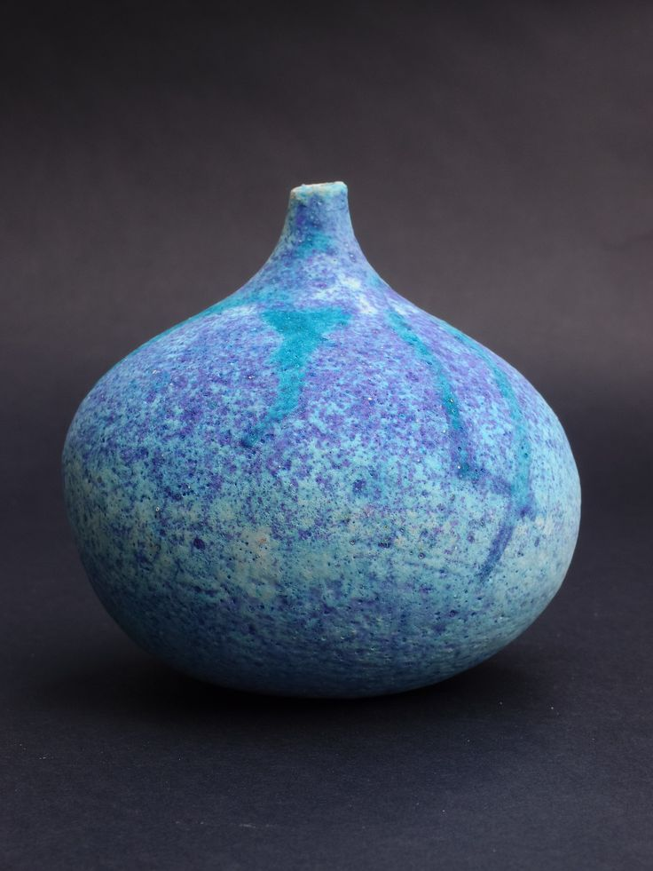
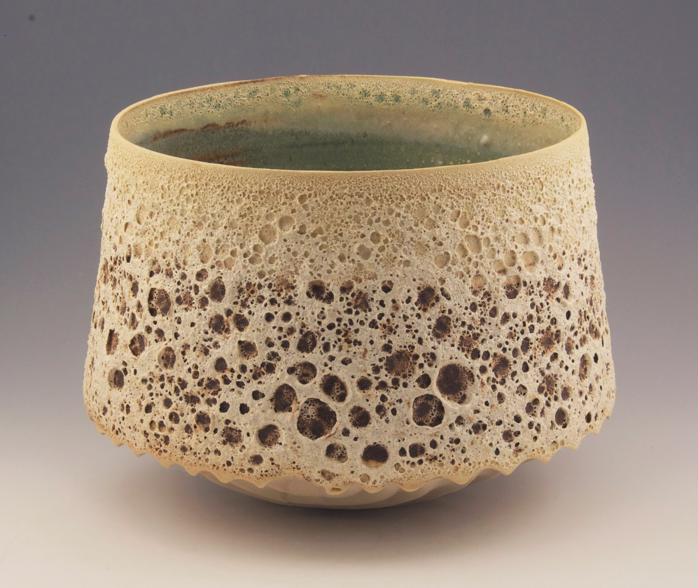
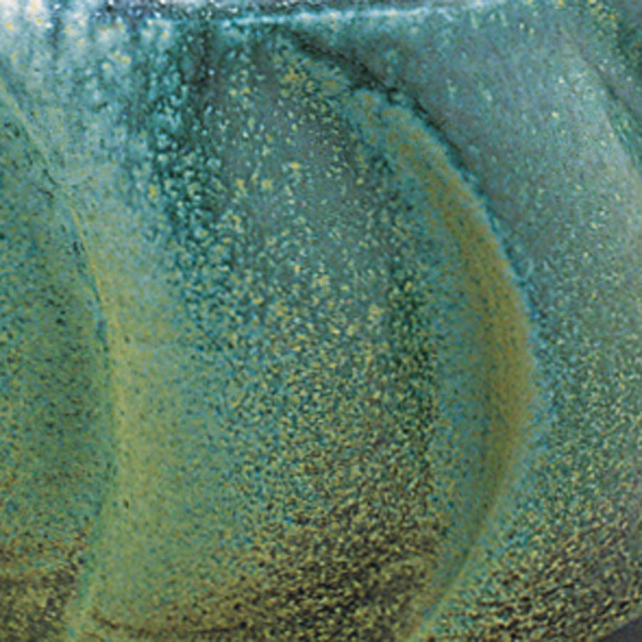
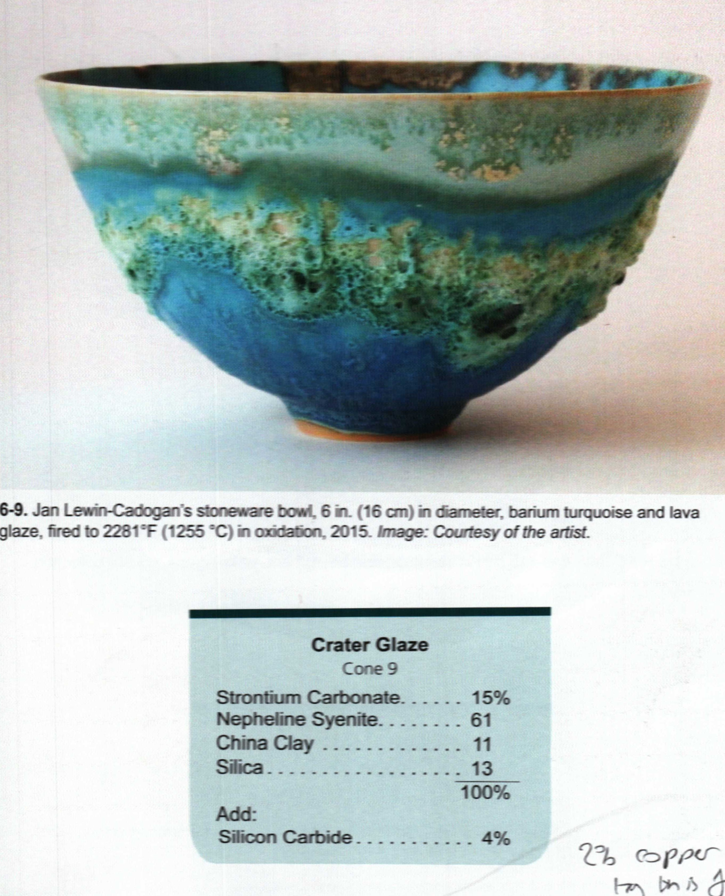

My Inspiration
PrivateCollect images of pottery, glazes, and surfaces that inspire you. Tag them, add notes, and organize into projects.
Your visual mood board
Upload photos of pots, glazes, textures, and surfaces that catch your eye. Add notes about what you like, tag them with attributes (cone, finish, color), and group them into project folders for future reference.
12 images

Blue/purple speckled bud vase — closed form
Love the color variation from copper/cobalt. The speckle pattern is from slow cooling.

Crater/lava glaze bowl — heavy texture
Incredible crater texture from silicon carbide. Green interior with celadon liner. The scalloped foot is a nice touch.

Barium matte base glaze — surface detail
Beautiful teal/green-gold color shift. The barium gives it that buttery matte surface with depth.

Jan Lewin-Cadogan — Crater Glaze, Cone 9
Barium turquoise + lava glaze. Strontium Carb 15%, Neph Sy 61%, China Clay 11%, Silica 13% + Silicon Carbide 4%. Fired 2281°F oxidation.
Copper red ox-blood — heavy reduction
Deep ox-blood pooling at the foot. Ask about firing schedule — likely very heavy reduction at cone 10.
Wood fired anagama — natural ash deposit
Celadon teabowl — jade green
Classic Song dynasty celadon color. Iron 1-2% in reduction. Want to try this depth of color.
Crystalline macro — zinc crystal formation
Radial crystal growth from heavy zinc. Slow cool over 6+ hours. Would need programmable controller.
Faceted porcelain vessel — carved form
Cobalt slip trailing on stoneware
The trailing technique gives beautiful line quality. Cobalt over iron-bearing body.
Shino — carbon trap pattern
Iron saturate — pooling detail
The way heavy iron pools and breaks over texture. Beautiful rust-to-black gradient.